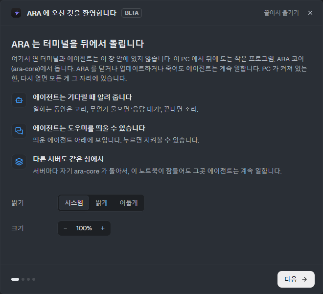
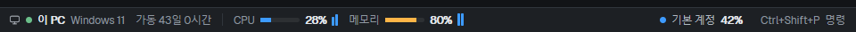
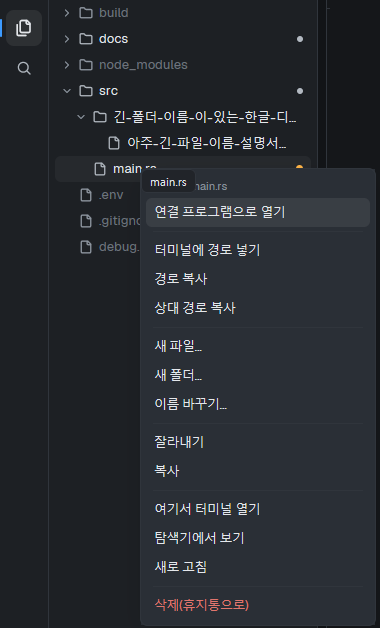
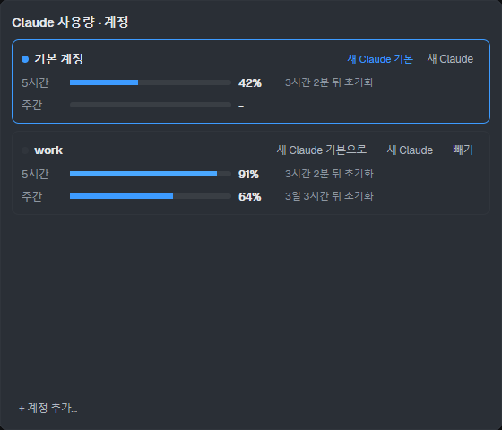
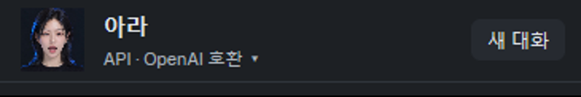
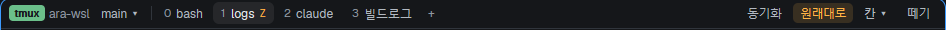
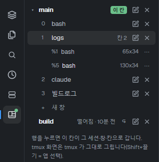
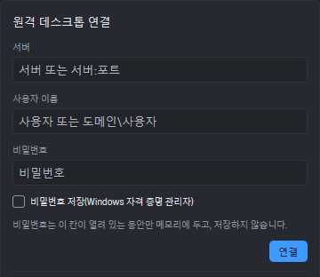
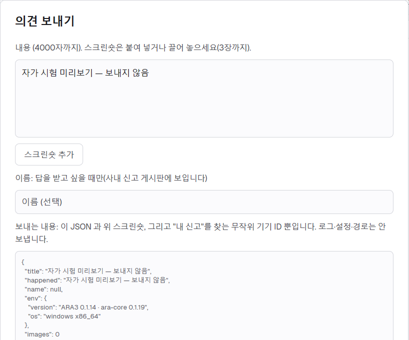

ARA 3 시험판 소개
ARA 3 는 아라를 네이티브로 새로 만든 판입니다. 지금은 시험판(베타)이고 아직 배포 전이라 내려받을 수 없습니다. 이 페이지는 지금까지 만들어 시험한 것을 화면 기준으로 정리한 소개입니다. (2026-11-10 기준)
1. ARA 3 는 무엇인가
아라 2 는 Electron 으로 만든 앱이고, ARA 3 는 Rust 와 GPUI 로 만든 네이티브 앱입니다. 화면은 같은 아라의 얼굴(그래파이트 색, 파란 포인트)을 이어받았고, 쓰던 기능을 하나씩 옮기고 있습니다.
- 코어가 터미널을 뒤에서 돌립니다. 터미널과 에이전트는 앱 창 안이 아니라 이 PC 에서 뒤에 도는 작은 프로그램 ARA 코어(ara-core)에서 돕니다. 앱을 닫거나 업데이트하거나 앱이 죽어도 에이전트는 계속 일하고, PC 가 켜져 있는 한 다시 열면 모든 것이 그 자리에 있습니다.
- 가볍게 받습니다. 앱 업데이트 묶음이 약 27MB 입니다(아라 2.x 설치 파일은 162MB).
-
나중에 이름이 그냥 "아라(ARA)"가 됩니다. 완성되면 아라 2 를 대체합니다. 지금의
ARA 3·ara3라는 이름은 아라 2 와 함께 쓰는 동안만 붙이는 임시 이름입니다.
| 아라 2 | ARA 3 (시험판) | |
|---|---|---|
| 만든 방식 | Electron | Rust + GPUI (네이티브) |
| 설치 위치 | Programs\ARA | Programs\ARA3 |
| 탐색기 주소창 이름 | ara · 아라 | ara3 |
| 상태 | 배포 중 (2.2.18) | 시험판 · 배포 전 |

2. 주요 기능
모양과 글꼴
- 테마: 어두운
ara-dark와 밝은ara-light. 밝기를 [시스템·밝게·어둡게] 중에 고를 수 있습니다. - D2Coding 이 터미널 기본 글꼴입니다. 한글이 정확히 두 칸 폭으로 맞고, 글꼴이 없으면 맑은 고딕으로 이어집니다.
- 한글 UI: 명령 팔레트·설정·오른쪽 클릭 메뉴·시작 안내·알림이 한글입니다. 영어로 남은 것은 6절에 적었습니다.
하단 바와 아이콘 줄
- 하단 바: 지금 보는 칸이 이 PC 인지 어느 서버인지(연결 점 포함), OS, 가동 시간, CPU·메모리 게이지와 최근 추이를 2초마다 보여 줍니다. 메모리에 마우스를 올리면 사용/전체 GB 가 보이고, NVIDIA 그래픽카드가 있으면 GPU 칸도 생깁니다. 칸을 바꾸면 그 칸이 있는 PC·서버의 수치로 바뀝니다. 서버 수치는 그 서버에 ARA 코어가 있어야 나옵니다.
- 아이콘 줄(왼쪽 끝): 세션(스페이스·에이전트, 응답 대기 수 배지) · 파일 · 찾기 · 기록 · 서버 · tmux(칸이 tmux 일 때만). 아래쪽에 설정과 서버 추가. 보이는 보기의 아이콘을 다시 누르면 사이드바가 접힙니다.

파일 트리와 오른쪽 클릭
- 활성 칸의 폴더를 따라갑니다(이 PC·서버 모두). [고정] 으로 칸을 바꿔도 그대로 두고, [따라가기] 로 풉니다. Ctrl+Shift+E 로 열고 접습니다.
- 숨김 파일과
.gitignore대상은 흐리게 보이고, Git 상태는 점으로 보입니다(초록 새 파일 · 앰버 수정 · 빨강 삭제·충돌). - 오른쪽 클릭: 연결 프로그램으로 열기 · 터미널에 경로 넣기(Enter 는 누르지 않습니다) · 경로 복사 · 상대 경로 복사 · 새 파일 · 새 폴더 · 이름 바꾸기 · 잘라내기 · 복사 · 붙여넣기(같은 PC·서버끼리) · 여기서 터미널 열기 · 탐색기에서 보기 · 새로 고침 · 삭제. 이 PC 에서는 삭제가 휴지통으로 가고, 서버에서는 "되돌릴 수 없습니다" 확인을 거칩니다.
- 이 PC 의 목록·새 파일·이름 바꾸기·복사·이동은 앱이 직접 처리해서 거의 바로(0.2초 안쪽) 반영됩니다.

Claude 상태 · 끝남 띠 · 이어 하기
-
아라가 띄운 Claude 의 쉬는 중 · 작업 중 · 응답 대기 · 완료가 사이드바 에이전트 목록과 칸 머리에 보입니다.
기다릴 때와 끝났을 때 알림과 소리가 나오고, Ctrl+Shift+I 로 지난 알림 목록을 볼 수 있습니다.
셸에서 직접 친
claude도 상태와 알림이 뜹니다. -
Claude 가 끝났거나, 앱·PC 를 다시 켜서 대화가 끊기면 칸 위에 끝남 띠가 뜹니다:
"Claude 세션이 끝났습니다" / "앱·PC 재시작으로 Claude 대화가 끊겼습니다".
[이 대화 이어 하기] 는
claude --resume으로 같은 자리에서 대화를 다시 열고, [새로 시작] 은 같은 자리에서 새 Claude 를 띄우고, [×] 는 띠만 닫습니다.
지난 세션 · 사용량 · 계정 전환
- 지난 세션(아이콘 줄 [기록] · Ctrl+Shift+H · 팔레트): 이 PC 의 Claude·Codex 대화를 새것부터 300개까지 모아 오늘·어제·이번 주·이전으로 묶어 보여 줍니다. 낱말로 찾고, [이어 하기] 로 그 폴더에서 이어 갑니다. 서버 스페이스면 [서버 기록] 을 눌러 그 서버의 대화도 볼 수 있습니다.
- 사용량: 하단 바 오른쪽 칩에 새 Claude 기본 계정의 5시간 사용률이 보입니다(85% 부터 앰버). 누르면 계정마다 5시간·주간 막대와 초기화까지 남은 시간이 나옵니다. 값은 아라가 띄운 Claude 가 알려 주는 것을 쓰고, 계정 토큰을 읽거나 비공개 사용량 서버를 부르지 않습니다.
-
계정 전환: 사용량 창의 [+ 계정 추가…] 에서 이름을 주면 그 계정으로 Claude 탭이 열리고
/login을 안내합니다. [새 Claude 기본으로] 로 기본 계정을 바꾸고, + 메뉴·팔레트에서 계정을 골라 새 Claude 를 띄웁니다. 계정을 지울 때는 두 번 눌러 확인합니다. 로그인 정보는 계정마다 따로 두고 대화 기록 폴더는 같이 쓰므로, 다른 계정으로도 같은 대화를 이어 갈 수 있습니다.

아라 채팅 (오른쪽 패널)
- 탭 막대 오른쪽 [아라] 단추로 오른쪽에 채팅 패널을 엽니다. 얼굴이 있고 답이 흘러오는 동안 입이 움직입니다. 얼굴은 [사진형] 과 [숨기기] 중에 고릅니다.
- 엔진은 Claude Code(계정·모델·"계획 먼저" 선택, 지난 대화 이어 하기) 또는 API 키(Anthropic · OpenAI 호환 · Google)입니다. API 키는 Windows 자격 증명 관리자에 저장됩니다.
- 읽기만 하는 일은 자동으로 하고, 터미널에 글자를 보내거나 지우는 일 같은 쓰는 일은 [허용]·[거부] 카드로 묻습니다. 한 일은 실행 전에 앱 폴더의 기록 파일에 남습니다. 승인을 통째로 건너뛰는 기능은 없습니다.
- 음성은 지금 "파일로 말하기"(wav 파일 입출력)까지입니다. 마이크·스피커는 준비 중입니다.

서버 · tmux
- 서버: 아이콘 줄의 [서버] 에서 목록을 보고 [SSH 로 열기] 로 바로 붙습니다. 코어 없이도 됩니다. 자세한 것은 4절.
- tmux: 칸이 tmux 안일 때만 마우스로 쓰는 줄이 켜집니다. 칸 머리에 세션 · 창 탭 · 새 창 · 동기화 · 확대 · 칸 메뉴 · 떼기가 생기고, [tmux] 를 누르면 사이드바에 세션 ▸ 창 ▸ 칸 트리가 나옵니다. tmux 를 안 쓰는 사람에게는 아무것도 달라지지 않습니다.


원격 데스크톱(RDP)
- 팔레트(F1)에서 "원격 데스크톱 연결" 을 고르면 RDP 탭이 열립니다. 서버(또는 서버:포트) · 사용자(또는 도메인\사용자) · 비밀번호를 넣고 [연결].
- [비밀번호 저장] 은 선택이며 Windows 자격 증명 관리자에 저장됩니다. 연결에 성공했을 때만 저장하고, 최근 접속 10개 목록(비밀번호는 없음)에서 한 번에 다시 붙고 [×] 로 지웁니다.
- 칸 크기에 맞춰 해상도가 따라가고 높은 화면 배율에서도 글자 크기가 맞습니다. 텍스트 클립보드는 양방향입니다. 한/영 키(와 [한/영] 단추)가 원격으로 넘어갑니다.
- RDP 칸에서는 Ctrl+Shift+글자 같은 조합은 앱이 가져가고(팔레트·칸 닫기 등), 나머지 키는 모두 원격으로 갑니다.
- 탭이나 칸을 닫으면 원격 세션도 끊깁니다. 끊기면 [다시 연결] 이 나옵니다.

업데이트 · 신고
- 새 판이 나오면 화면 아래에 "ARA ○○ 준비됨 · 다시 시작 · 바뀐 점" 알약이 뜨고, 설정 › 업데이트에서도 볼 수 있습니다. 앱과 코어를 따로 업데이트합니다.
- 의견 보내기(Ctrl+Shift+F1)는 사내 신고로 갑니다. 내용(4000자까지)과 스크린숏(3장까지), 선택 이름만 보냅니다. 함께 가는 것은 버전·OS 와 무작위 기기 번호뿐이고 로그·설정·경로는 보내지 않습니다. 보내기 전에 미리보기에서 그대로 확인할 수 있습니다.

3. 아라 2 에서 옮겨 올 때
아라 2 와 함께 설치해 써도 겹치지 않습니다. 이름과 자리가 모두 다르기 때문입니다. (배포 뒤 설치 기준)
| 아라 2 | ARA 3 | |
|---|---|---|
| 설치 폴더 | %LOCALAPPDATA%\Programs\ARA | %LOCALAPPDATA%\Programs\ARA3 |
| 시작 메뉴 | ARA | ARA 3 |
| 탐색기 주소창 · Win+R | ara · 아라 | ara3 |
-
탐색기 주소창에
ara3를 치면 그 폴더에서 ARA 3 가 열립니다. 이미 떠 있으면 그 창에 새 스페이스를 추가합니다. Win+R 의ara3는 홈 폴더에서 엽니다. 나중에 아라 2 를 내릴 때 이 이름이ara로 옮겨 갑니다. - 손에 익은 단축키를 맞췄습니다. 가로·세로 분할, 칸 닫기, 칸 이동, 최대화, 파일 트리, 통합 검색 등이 아라 2 와 같은 키입니다(5절). 키가 원본과 부딪힌 곳은 아라 2 쪽 손버릇을 우선했습니다.
-
이미지 붙여넣기는 같습니다. 캡처한 그림을 Ctrl+V 하면
다운로드\agent\숫자-image.png로 저장하고 그 경로를 입력줄에 넣습니다(Enter 는 직접). -
계정과 기록: ARA 3 의 Claude 계정은 ARA 3 안에서 새로 추가합니다(처음 한 번 그 계정으로
/login). Claude 대화 기록은 원래 이 PC 의 Claude 기록 폴더에 있어서 [지난 세션] 에 그대로 보입니다. 추가한 계정의 기록은 이어 하기를 누를 때 기본 기록으로 합쳐지고, 같은 이름의 파일은 덮어쓰지 않고.ara-merge로 남깁니다. - 업데이트는 아라 2 와 따로 갑니다. ARA 3 는 자기 폴더에서 자기 판만 올립니다.
4. 원격 서버
ARA 3 에서는 서버에 코어를 깔지 않아도 접속해서 쓸 수 있고, 코어 설치는 쓰고 싶은 서버에만 하는 선택입니다. tmux 를 그대로 써도 됩니다. (아라 2 의 서버 데몬 이야기는 원격 서버에서 계속 실행 페이지에 있고, tmux 비교와 계정 따로 쓰기도 거기서 자세히 다룹니다.)
| 코어 없이 (SSH) | 코어 설치 | tmux 로 열기 | |
|---|---|---|---|
| 열기 | 서버 목록 › [SSH 로 열기] | 서버 카드의 "코어 설치(선택)…" 후 연결 | 서버 목록 › [tmux 로 열기 · 끊겨도 이어짐] |
| 연결이 끊기면 | 같이 끝남 | 칸이 서버에서 계속 삶 | tmux 가 살려 둠, 다시 붙으면 이어짐 |
| 하단 바 서버 수치 · 파일 트리 · Claude 상태 | 없음 | 됨(서버 코어가 알려 줌) | 코어와 따로 — 코어가 있으면 같이 됨 |
| 서버에 필요한 것 | SSH 접속만 | 리눅스 서버에 코어 한 개(설치는 선택) | tmux 설치 |
-
서버 목록은
~/.ssh/config의 호스트, 코어에 등록된 서버, 이 PC 의 WSL 을 모아 보여 줍니다. SSH 칸 머리에 SSH 표시와 ⓘ 안내가 붙습니다. - tmux 로 열기를 누르면 서버에 있는 기존 tmux 세션 목록(이름·창 수·붙은 수·마지막 활동)이 뜹니다. 골라서 붙거나 새 세션을 만듭니다. 비밀번호·OTP 로만 들어가는 서버는 마우스 줄 없이 열리는 것이 정상입니다.
- 원격 서버는 리눅스만 대상입니다. 서버에 코어가 없다는 안내가 뜨면 서버에서 설치 명령 한 줄을 실행한 뒤 다시 추가하세요.
5. 단축키
보고서에 있는 것만 적었습니다. 모두 기본값이고, 한글 자판에서의 동작은 6절 끝의 확인 상태를 보세요.
| 키 | 동작 |
|---|---|
| F1 · Ctrl+Shift+P | 명령 팔레트(통합 검색) |
| Ctrl+Shift+E | 파일 트리 열기 · 접기 |
| Ctrl+Shift+H | 지난 세션 |
| Ctrl+Shift+I | 알림 목록 |
| Ctrl+Shift+F1 | 의견 보내기(오류 신고) |
| Ctrl+, | 설정 |
| Ctrl+Shift+M | 서버(연결 관리) 설정 |
| Ctrl+Shift+B | 사이드바 접기 |
| Ctrl+Shift+- | 아래로 분할 |
| Ctrl+Shift+\ | 오른쪽으로 분할 |
| Ctrl+Shift+W | 칸 닫기 (탭 닫기에는 키가 없습니다 — 탭의 [×] 나 팔레트) |
| Ctrl+↑ · Ctrl+Shift+Z | 칸 확대 · 되돌리기 |
| Alt+←↑↓→ | 칸 사이 이동 |
| Alt+Shift+↑/↓ | 에이전트 이전 · 다음 |
| Ctrl+Tab · Ctrl+Shift+Tab | 다음 · 이전 탭 |
| Ctrl+1 ~ 9 | 탭 번호로 이동 |
| Ctrl+Shift+T | 새 탭 |
| Ctrl+Shift+D | 탭 복제(같은 폴더에서 새 탭 — 원격·프로필까지 복제하지는 않음) |
| Ctrl+Shift+F | 터미널 검색 |
| Ctrl+C | 글을 골라 둔 상태면 복사, 아니면 실행 중인 프로그램 중단(^C) |
| Ctrl+Shift+C / V | 복사 / 붙여넣기 |
| Ctrl+V | 붙여넣기 — 클립보드에 그림만 있으면 파일로 저장하고 경로를 넣음 |
| Ctrl+? | 도움말 |
아직 없는 키: 탐색기 창(Ctrl+Shift+O), 명령어 북(Ctrl+Shift+K), 터미널 초기화(Ctrl+Shift+R), AI 질문·에이전트 시작 키(Ctrl+Shift+L 등), 음성(Ctrl+Shift+Space).
키 설정은 ~/.config/ara/keys.json 에서 바꿉니다.
6. 알려진 한계 · 준비 중
사용하다 보이는 한계
- 영어로 남은 것: 새 소식(릴리스 노트), 서버 연결 이유 글 일부, 터미널 명령
ara-core의 도움말. - Windows 알림(OS 알림창)은 아직 없습니다. 알림은 앱 안 알림과 소리입니다.
- Claude 상태: Claude 가 강제 종료돼 신호가 끊기면 마지막 상태가 남을 수 있습니다. 서버의 Claude 상태는 리눅스 서버만 됩니다.
- 사용량은 Claude 만 보이고 Codex 사용량은 없습니다. 아라가 띄운 Claude 에서만 값이 들어오고, 값이 없으면 "알 수 없음" 으로 보입니다.
- 파일 트리: 서버 파일에는 "연결 프로그램으로 열기" 가 없고(두 번 누르면 읽기 전용 미리보기), 코어 없는 SSH 서버의 파일 트리는 아직 없습니다. 파일을 끌어서 터미널에 놓는 경로 넣기도 준비 중입니다.
- 아라 채팅: 마이크·스피커 음성이 없고(파일로 말하기까지), 답의 마크다운이 서식 없이 글자로 보이며, API 키 엔진은 글만 다루고 도구를 쓰지 못합니다.
- RDP: 서버 인증서 지문 확인이 없고(처음 접속해도 묻지 않음), 로그인은 NTLM 만 되어 Kerberos 전용 서버는 "로그인하지 못했습니다" 로 끝납니다. 그림·파일 클립보드, 여러 모니터, 자동 재접속이 없고, 해상도를 바꾸는 순간 화면이 잠깐 검어질 수 있습니다. 로컬에서 복사한 직후에는 RDP 칸을 한 번 눌러야 원격에 넘어갑니다.
-
tmux: 셸에서
ssh 서버를 친 뒤 그 안의 tmux 와 기본이 아닌 WSL 의 tmux 는 자동으로 알아보지 못합니다(서버 목록에서 열면 됩니다). tmux 3.2 미만은 느린 방식으로 동작하고,mouse off인 사용자의 휠 스크롤 연결과 칸 경계 끌기는 준비 중입니다. - 업데이트 뒤 다시 열기: 사내 보안 프로그램이 PowerShell 을 막으면 교체는 되지만 앱이 스스로 다시 뜨지 않을 수 있습니다. 그때는 직접 다시 열면 새 판이 뜹니다.
준비 중인 것
- 마이크·스피커 음성, 음성 설정 화면, 답 마크다운, API 엔진 도구, 점선형 얼굴
- 파일 끌어 놓기·서버 파일 받기/올리기, RDP 그림 클립보드·인증서 지문 확인, 끝남 띠의 [다른 계정으로 이어 하기]
- "내 신고" 보기, 설치기 제거 기능
- 코어 없는 SSH 보강(코어 설치 단추를 처음 연결한 칸에서 바로 누르기, SSH 키 등록 도우미 포함)과 tmux 2차
확인 상태
- 자동 시험과 숨은 화면에서의 실제 앱 시험을 통과한 것이 대부분입니다. 밝은 테마·한글 정렬·하단 바·상태 표시·신고(시험 서버)·업데이트 알약은 화면까지 확인했습니다.
- 아직 사람이 확인하지 못한 것: 한글 자판에서의 분할 키, 실제 키 입력으로의 Ctrl+C·이미지 붙여넣기, 실제 RDP 서버 접속, 실제 회사 개발 서버 접속, 실제 설치·배포, 실제 AI 키로의 대화.